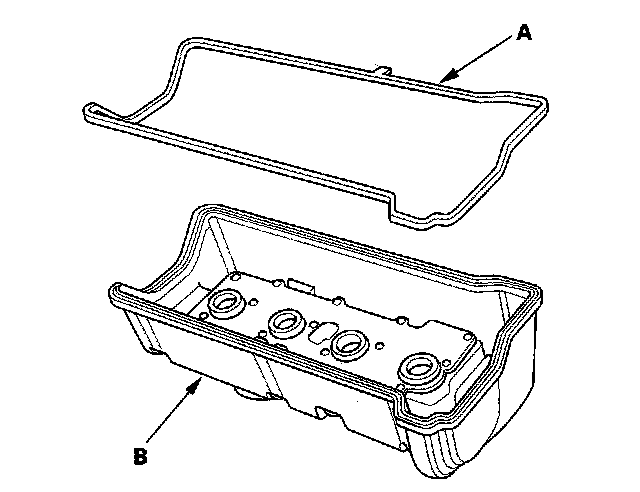
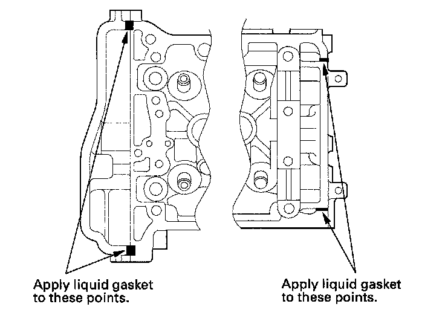
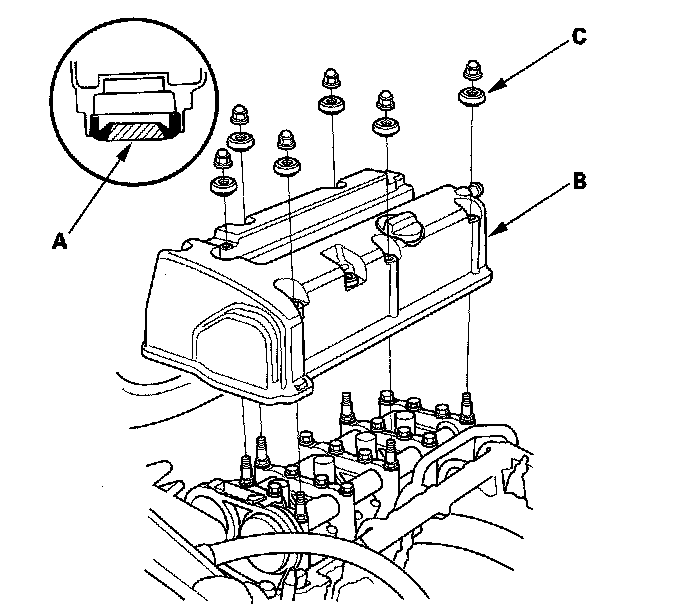
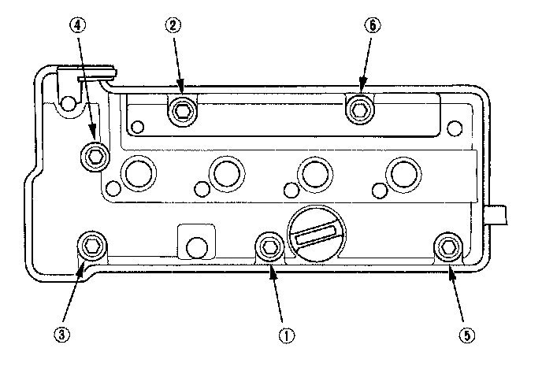
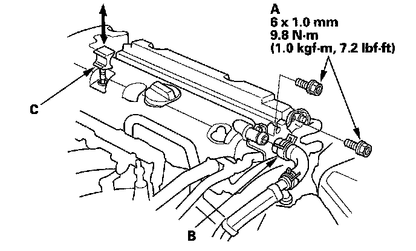
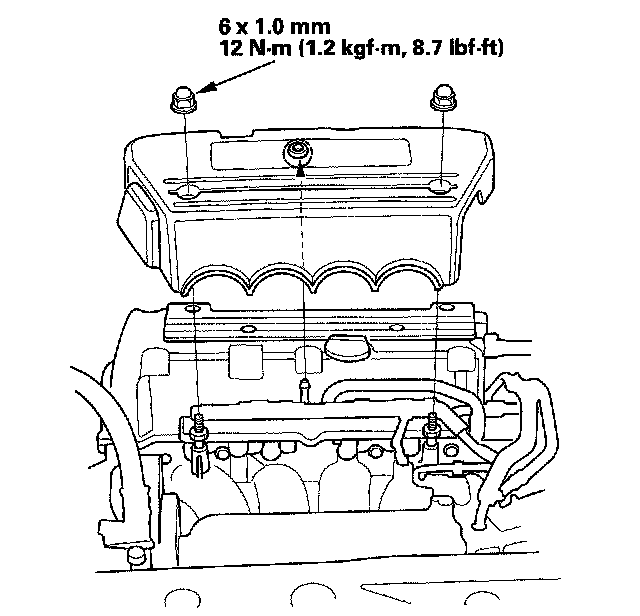

Cylinder Head Cover Installation
Cylinder Head Cover Installation1. Thoroughly clean the head cover gasket and the groove.
2. Install the head cover gasket (A) in the groove of the cylinder head cover (B).

3. Check that the mating surfaces are clean and dry.
4. Apply liquid gasket, P/N 08717-0004, 08718-0001, 08718-0002, 08718-0003, or 08718-0009, on the chain case and the No. 5 rocker shaft holder mating areas.
NOTE: Do not install components if too much time has passed after applying the liquid gasket (for P/N 08718-0002, no more than 4 minutes, for all others, no more than 5 minutes). Instead, remove the old residue and reapply the liquid gasket.

5. Set the spark plug seals (A) on the spark plug tubes. Place the cylinder head cover (B) on the cylinder head, then slide the cover slightly back and forth to seat the head cover gasket.

6. Inspect the cover washers (C). Replace any washer that is damaged or deteriorated.
7. Tighten the bolts in two or three steps. In the final step tighten all bolts, in sequence, to 12 N-m (1.2 kgf-m, 8.7 lbf-ft).
NOTE:
^ Wait at least 30 minutes to allow liquid gasket to cure before filling the engine with oil.
^ Do not run the engine for at least 3 hours to allow liquid gasket to cure after installing the head cover.

8. Install two bolts (A) securing the evaporative emission (EVAP) canister purge valve bracket.

9. Install the breather hose (B) and the dipstick (C).
10. Connect the evaporative emission (EVAP) canister purge valve connector.
11. Install the four ignition coils.
12. Install the engine cover.
